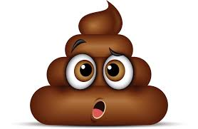

Titre péteux
Portez ce caca prout au
pipi
en fait c'était du
cacaprout

test
du caca ?
du pipi ?
en fait non c'était du caca
clique ici...
Recette du caca au prout :
Faire du caca
Rajoutez y du prout
felicitation vous avez fini !!